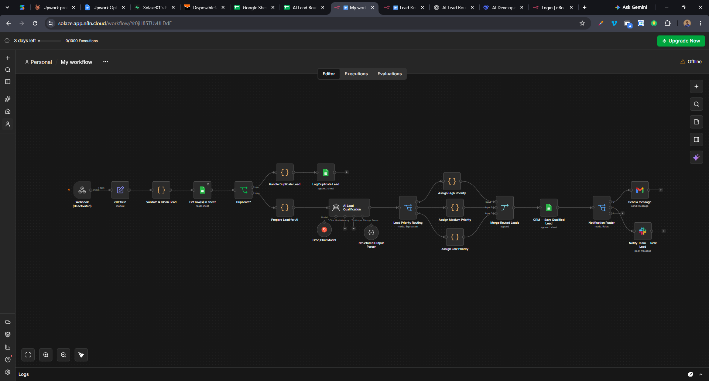
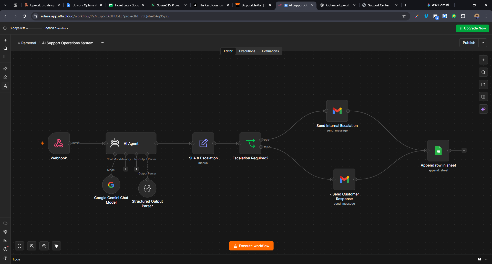
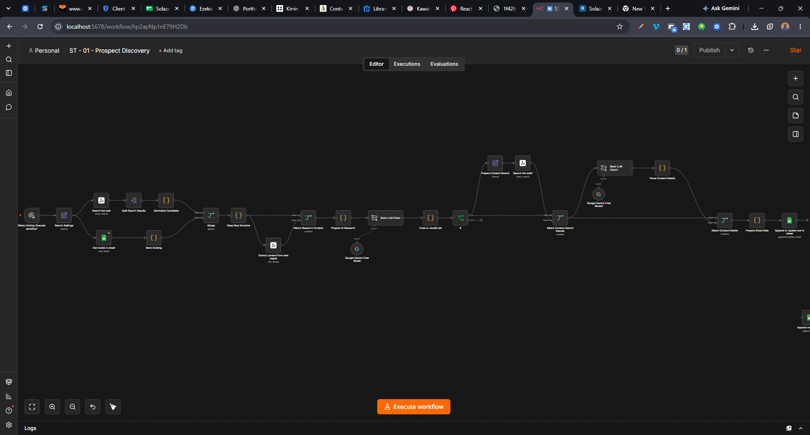

Workflow automation
Move routine steps forward with n8n.
N8N WORKFLOWS · PYTHON TELEGRAM BOTS · AI
I build n8n workflow automations, Python Telegram bots, RSS news systems and API integrations to connect tools and take repetitive work off your hands.
N8N · PYTHON · APIS · AI WORKFLOWS
Move routine steps forward with n8n.
Help your tools share the right information.
Classify and summarize with human review.
SELECTED PROJECTS / 06
Workflow captures and working demos, with the tools and project status made clear.

01 / LEAD INTAKE · N8N
The workflow cleans incoming leads, checks for duplicates, uses AI to help qualify them, then routes by priority and prepares CRM and team updates.
02 / SPEED TO LEAD · N8N
Routes new enquiries into a timely follow-up workflow so teams can respond while interest is high.
Working demo on test data.
Open demo on Loom ↗
03 / SUPPORT OPERATIONS
Checks support requests for urgency and SLA needs, routes cases for internal escalation and records the interaction.
Workflow capture · runtime not verified
View workflow ↗
04 / PROSPECT RESEARCH
Collects web results, extracts page context and organizes research findings for a spreadsheet.
Workflow capture · runtime not verified
View workflow ↗05 / SPORTS DIGEST · PYTHON / TELEGRAM
Collects RSS updates, prepares a readable digest with AI tools and delivers it to Telegram.
Watch the walkthrough · Telegram output shown
Open demo on Loom ↗06 / AI NEWS WORKFLOW · PYTHON
Collects articles from RSS feeds, then uses AI to rewrite the news for a specific publication’s website.
Unlisted YouTube walkthrough
Watch the news workflow ↗These captures show the project structure or output available today. No client results or performance figures are implied.
A CLIENT’S WORDS
On an earlier Python Telegram bot and shop project.
I came to him with a vision for a custom Telegram bot, and he didn’t just build it, he brought the whole project to life exactly how I imagined it.
He handled everything from the ground up: the entire workflow, a fully functional shop, secure payment integrations, and even location services and user reviews.
What really sets him apart, though, is the customer service. Mr. Ezekiel went way beyond just ‘writing code.’ He offered so much extra help and guidance throughout the process, making sure I was comfortable with how everything worked.
HOW I WORK
A useful workflow should be clear to the people who rely on it, including when something needs a person’s attention.
What starts it? Which tools are involved? Where do delays or missed handoffs happen?
Automate repeatable steps and make exceptions visible.
Walk through normal cases and decide where a person needs to take over.
ABOUT SOLAZETECH
SolazeTech is my working brand for automation and bot development. I work with n8n, Python, APIs and AI tools to reduce repeated steps and make the next action clearer.
I’m interested in the small handoffs that eat up a day: moving a lead into a sheet, flagging a delayed request, or getting the right update to the right person.
See what I’m building on GitHub ↗HAVE A PROCESS IN MIND?
Tell me what takes too much time, which tools you use and what you’d like to change.